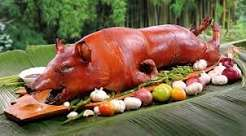

.jpeg) |
.jpeg) |
.jpeg) |
| PANCIT HABHAB | BULALO | PICHI-PICHI |
| Pancit Habhab is a classic Lucban, Quezon specialty featuring miki Lucban noodles sautéed with pork, shrimp, liver, and vegetables like chayote and carrots. | Bulalô is a beef dish from the Philippines. It is made by slow-cooking beef shanks and bone marrow until the collagen and fat has melted into a light-colored broth. | Pichi-pichi is a traditional Filipino steamed dessert or kakanin made from grated cassava, sugar, and water (or coconut milk). |
VISAYAS
 |
.jpeg) |
.jpeg) |
| LECHON BABOY | BINIGNIT | MORON |
| Lechon baboy is a famous Filipino dish consisting of a whole pig stuffed with herbs and slowly spit-roasted over charcoal. | Binignit is a traditional Visayan dessert soup made of glutinous rice cooked in coconut milk. | Moron (pronounced mo-RON) is a popular sweet Filipino rice cake native to the Eastern Visayas region, particularly Leyte and Samar. |
MINDANAO
.jpeg) |
.jpeg) |
.jpeg) |
| GINATAANG MANOK | RENDANG | SINUGLAW |
| Ginataang manok is a comforting Filipino chicken stew featuring bone-in chicken braised in rich coconut milk, infused with aromatics like ginger, garlic, and onions. | Rendang is a rich, caramelized dry meat curry that originated with the Minangkabau people of West Sumatra, Indonesia. | Sinuglaw is a popular Filipino appetizer and pulutan (drinking food) from Mindanao and the Visayas. It is a portmanteau of two cooking methods: sinugba (charcoal-grilled pork belly) and kinilaw (raw fish cured in vinegar and citrus). |